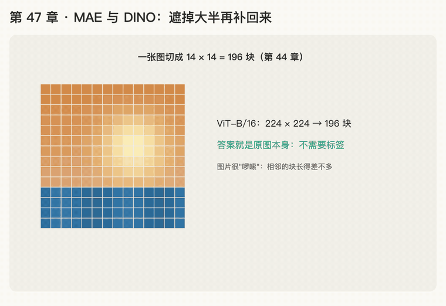

第 47 章 · MAE 与 DINO：不要标签也能学会看图
本章回答：CLIP 还要配文，有没有连文字都不要、只靠图片自己就能学的办法？MAE 为什么要遮掉 75% 这么多？只让 encoder 看剩下的 25% 能省多少？DINO 的"学生跟着老师学，老师又是学生的平均"怎么不会学成一团糟？
讲解日期：2026-11-18 · 上一章：第 46 章 CLIP 与 SigLIP · 下一章：第 48 章 DDPM
对应原文：MAEtransformer-deep-dive/materials/text/papers/mae-2111.06377.txt摘要 L23–L30、§3 L115–L223（遮挡、encoder、decoder、MSE、归一化像素、实现）、Figure 2 注 L63；DINOdino-2104.14294.txtAlgorithm 1 L105–L131、§3.1 L153–L225（式 3、EMA、式 4 centering）、温度 L259–L261；DINOv2dinov2-2304.07193.txt摘要 L37–L43、L108、L235
本章缩写：MAE = Masked Autoencoder（遮挡的 / 自编码器）；autoencoder（自编码器：先压缩再还原自己）；mask token（遮挡 / 词元：代表"这里被遮了"的共享向量）；MSE = Mean Squared Error（均方 / 误差）；BERT = Bidirectional Encoder Representations from Transformers（双向 / 编码器 / 表示，第 9 章）；DINO = self-DIstillation with NO labels（无标签的自蒸馏）；SSL = Self-Supervised Learning（自监督学习：答案从数据本身来）；EMA = Exponential Moving Average（指数 / 滑动 / 平均）；λ（lambda，读作"兰布达"）：EMA 的保留比例；\(\tau_s\)、\(\tau_t\)：学生、老师的温度（s = student，t = teacher）；c：中心（center）向量；collapse（坍缩：所有图都输出一样的东西）；LVD-142M = Large Vision Dataset 142 Million（大型视觉数据集，1.42 亿张）。全部缩写见 附录 · 缩写与术语表
讲解
第一步：遮掉 75%，让模型猜回来（2026-11-18）
类比：拼图只给四分之一。 一张图切成 196 块（第 44 章），随机拿走 147 块，只留 49 块，让模型把整张图补回来。要补得像，它就得明白"这是一只狗，耳朵应该在头上"。答案就是原图，不用任何标签，这叫自监督（self-supervised）。
这和 BERT 遮词再猜（第 9 章）是同一个思路，区别在遮多少：
| 遮多少 | 原因 | |
|---|---|---|
| BERT（文字） | 15% | 一句话信息很密，遮多了猜不出来 |
| MAE（图片） | 75% | 图片很"啰嗦"：相邻的块长得差不多，遮少了从旁边一抄就补上了，学不到东西 |
原文（L127–L140）：随机、均匀地抽块，不放回；遮得多才"去掉冗余"，任务才不能靠"从旁边的块外推"就解决。均匀抽还能避免"中间遮得多、边上遮得少"的偏差。
数字演示：ViT-B/16，224 × 224 的图切成 196 块：
| 遮挡比例 | 剩下几块给 encoder | encoder 注意力格子 | 和不遮比 |
|---|---|---|---|
| 0%（不遮） | 196 | 38416 | 1 |
| 50% | 98 | 9604 | 1/4 |
| 75% | 49 | 2401 | 1/16 |
| 90% | 20 | 400 | 约 1/96 |
原文 Figure 2 甚至演示了遮 80%、只剩 196 块里的 39 块也能补出像样的图（L63）。
一句话：随机遮掉 75% 的小块让模型补回来，答案就是原图；图片冗余大，遮得少就太简单。
第二步：不对称：encoder 只看露出的块，轻量 decoder 负责补（2026-11-18）
类比：专家只看线索，助手负责誊写。 贵的专家（大 encoder）只研究露出来的 49 块；把专家的笔记交给便宜的助手（小 decoder），助手在空缺处放上"这里缺一块"的占位符，把整张图誊出来。
| 部分 | 看什么 | 有多大 |
|---|---|---|
| encoder（ViT） | 只看露出的 25%，被遮的块直接删掉，不放占位符（L141–L150） | 大：ViT-Large / Huge |
| decoder | 全部 196 个位置：encoder 的输出 + mask token（L151–L160） | 小：默认 8 层、宽 512，每个 token 的计算量不到 encoder 的 10%（L183、L249） |
| mask token | 一个共享的、学出来的向量，表示"这里缺一块"；还要加位置编码，才知道缺的是哪一块 |
省多少：encoder 是大头，它只处理 1/4 的 token，注意力格子是 1/16。原文说训练快 3 倍以上，内存也省（L30、L83）。
实现很简单（L204–L222）：
- 每块投影 + 位置编码（第 44 章式 1）；
- 把 196 个 token 随机打乱，砍掉后 75%，剩下的给 encoder；
- encoder 输出后面接上 147 个 mask token，再按原来的顺序还原（unshuffle）；
- 整排送进 decoder，每个位置输出一块的像素。
训完以后：decoder 扔掉，只留 encoder。用的时候不遮，196 块全给它看，提取的特征拿去分类、检测。
一句话：encoder 只处理露出的 25%（省掉大部分计算），被遮的位置换成共享的 mask token 交给小 decoder 去补；训完只留 encoder。
第三步：loss：只在被遮的块上算均方误差（2026-11-18）
loss（L195–L203）：decoder 对每个被遮的块输出 P²·C 个数（16 × 16 × 3 = 768），和原图那块的像素比，算均方误差：
| 符号 | 意思 |
|---|---|
| \(x_k\) | 原图这一块第 k 个像素值（目标） |
| \(\hat x_k\) | decoder 猜的第 k 个值（读作"x hat"，帽子表示"估计的"） |
| n | 一块有几个数 |
两个细节：
- 只在被遮的块上算，露出的块不算，和 BERT 一样。原文说在全部块上算会掉约 0.5%（L223 脚注）。
- 目标用"归一化像素"：每一块先减去自己的平均值、除以自己的标准差，再当目标（L198–L203）。这样模型更关注块里的明暗变化（边缘、纹理），不必猜整块的亮度。
数字演示（编的，一块只有 4 个数）：被遮的一块原来是 [2, 4, 6, 8]。
- 平均值 5，标准差 \(\sqrt{((−3)^2 + (−1)^2 + 1^2 + 3^2)/4} = \sqrt{5} \approx 2.236\)；
- 归一化目标：[−1.342, −0.447, 0.447, 1.342]；
- decoder 猜 [−1, −0.5, 0.5, 1]；
- 差的平方：0.117、0.003、0.003、0.117，平均 ≈ 0.060。
一句话：只在被遮的块上，把 decoder 的输出和"每块各自归一化后的像素"比均方误差。
第四步：DINO：学生学老师的输出分布（2026-11-18）
换一种自监督：MAE 让模型"补图"，DINO 让模型"对同一张图的两个裁剪给出一样的判断"。
类比：两个人看同一只猫的不同照片。 一张是全身照，一张只拍到头。老师看全身照说"70% 像 A 类、20% 像 B 类……"，学生看头部特写，要说出和老师一样的分布。这样学生就得学会"头部特写也是这只猫"，而不是记住像素。
结构（Algorithm 1，L105–L131）：
- 同一张图随机增强两次，得到 \(x_1\)、\(x_2\)（DINO 还有多裁剪：2 张 224² 的大图，几张 96² 的小图，L153–L170）；
- 学生网络 \(g_{\theta_s}\) 和老师网络 \(g_{\theta_t}\) 结构完全一样（都是 ViT），各输出 K 个数；
- 各做 softmax（带温度）变成 K 类上的概率 \(P_s\)、\(P_t\)；
- loss 是交叉熵 \(H(P_t, P_s) = -\sum_k P_t^{(k)} \log P_s^{(k)}\)（式 3）。这就是第 1 章第三步那个一般形式：正确答案不再只有一格是 1，而是老师给的整个分布；
- 两个方向交叉：老师看 \(x_1\) 教学生看 \(x_2\)，老师看 \(x_2\) 教学生看 \(x_1\)，取平均。梯度只更新学生（
t.detach()）。
数字演示（编的，K = 3；为了好算，学生温度取 1、老师温度取 0.5，论文是 \(\tau_s\) = 0.1、\(\tau_t\) 从 0.04 升到 0.07，L259–L261）：
| 输出 | 处理 | 概率 | |
|---|---|---|---|
| 老师 | [2, 1, 0] | 减中心 c = [1, 0, 0] → [1, 1, 0]，除以 0.5 → [2, 2, 0] | \(P_t\) = [0.468, 0.468, 0.063] |
| 学生 | [1, 2, 0] | 除以 1 | \(P_s\) = [0.245, 0.665, 0.090] |
学生要把第 1 类的概率往上提，才能贴近老师。
一句话：同一张图两个裁剪，老师（结构相同）的输出分布当答案，学生用交叉熵去贴；只更新学生。
第五步：老师从哪来：学生的滑动平均；centering + sharpening 防坍缩（2026-11-18）
老师不训练，是学生的平均（L197–L210）：
λ 从 0.996 慢慢升到 1。每一步老师只往学生那边挪 0.4%，相当于学生"最近一大段时间的平均"，比此刻的学生更稳，原文观察到老师一直比学生好（L215–L220）。
数字演示：某个参数老师是 1.0，学生刚更新到 2.0，λ = 0.996：新老师 = 0.996 × 1.0 + 0.004 × 2.0 = 1.004。
坍缩（collapse）：最偷懒的办法是"不管什么图都输出一样的分布"，学生和老师永远一致，loss 很小，但什么也没学到。DINO 用两招互相牵制（L187–L198）：
| 招 | 做法 | 防的是 | 单用的副作用 |
|---|---|---|---|
| centering（减中心） | 老师的输出先减去一个中心 c，c 是老师最近输出的滑动平均（式 4：\(c \leftarrow mc + (1-m)\frac{1}{B}\sum_i g_{\theta_t}(x_i)\)） | 某一维一直特别大，所有图都押在同一类 | 把输出推向均匀分布 |
| sharpening（锐化） | 老师用很低的温度 \(\tau_t\) | 均匀分布 | 把输出推向只押一类 |
两招一起用，正好抵消（L195–L198）。第四步的数字里：老师原始输出 [2, 1, 0] 第 1 维最大，c = [1, 0, 0] 把它压下去；温度 0.5 又把分布变尖：同样是 [2, 1, 0]，温度 1 时是 [0.665, 0.245, 0.090]，温度 0.5 时是 [0.867, 0.117, 0.016]。
DINOv2（摘要 L37–L43）：同一条路线做大。先从 12 亿张网络图片里检索、去重，挑出 1.42 亿张"精选"的（LVD-142M，L108、L235）；训一个 10 亿参数的 ViT-g，再蒸馏成小模型。它的特征不用微调（frozen features：冻结特征）就能直接拿去做分类、分割、深度估计，常被当成机器人和视频模型的视觉主干。
一句话：老师是学生参数的滑动平均（λ ≈ 0.996）；老师输出先减中心再用低温锐化，两招牵制，防止所有图输出同一个分布。
动画演示：遮掉大半再补回来

可交互版：animations/47-mae-dino.html（需要用本地服务打开，见 animations/README.md"跑起来看"；滑块：遮挡比例从 0% 拖到 95%，看剩几块、encoder 的注意力格子是原来的几分之一）。
怎么看：
- 一张 14 × 14 = 196 块的图，随机遮掉 75%，剩 49 块（第一步）；
- 只有 49 块进 encoder，被遮的位置换成 mask token 交给小 decoder（第二步）；
- decoder 补出整张图，只在被遮的块上算误差（第三步）；
- DINO：两个裁剪分别给学生和老师，老师是学生的滑动平均（第四、五步）。
练习与作答记录
题 1（第一步）：一张 224 × 224 的图，P = 14，遮挡比例 75%。一共几块？剩几块给 encoder？encoder 的注意力格子是不遮时的几分之一？
题 2（第二步）：（a）MAE 的 encoder 为什么不放 mask token？（b）训完以后 decoder 还用吗？
题 3（第三步）：被遮的一块原来是 [1, 1, 3, 3]，decoder 猜 [−1, −1, 1, 1]。先算归一化目标，再算 MSE。
题 4（第五步）：（a）某参数老师是 0.5，学生是 1.5，λ = 0.99，更新后老师是多少？（b）只用 centering、不用 sharpening，老师的输出会变成什么样？
口诀
拼图只给四分一，图片啰嗦遮得多。
专家只看露出的，助手占位来补全；训完扔掉助手只留专家。
只算遮住的那几块，每块归一再比方差。
两张裁剪同一图，学生去贴老师的分布。
老师是学生的慢平均；减中心、低温度，两招牵制不坍缩。
本章复习卡片
必背：B10–B11（B10 MAE 的遮挡比例、不对称结构和 loss；B11 DINO 的老师、交叉熵和防坍缩）。练习做完后，按答错、卡住的地方再补。
附录 · 延伸阅读
留给以后深入学习用，不影响本章主线。★ 是建议先读的。
推荐阅读
| 读什么 | 读哪里 | 读它为了什么 |
|---|---|---|
| ★ Masked Autoencoders Are Scalable Vision Learners（MAE，He 等 2021） | §3 L115–L223；§4.1 消融（遮挡比例曲线、decoder 深度和宽度）L240 起 | 本章原文：遮挡、不对称结构、归一化像素目标 |
| ★ Emerging Properties in Self-Supervised Vision Transformers（DINO，Caron 等 2021） | Algorithm 1 L105–L131；§3.1 L153–L225；§5.3 防坍缩的消融 | 自蒸馏、EMA 老师、centering 和 sharpening |
| DINOv2（Oquab 等 2023） | 摘要 L37–L43；数据管线 §3 L235 起 | 精选数据、10 亿参数、冻结特征 |
| BEiT（Bao 等 2021） | 全文（本地没有文本版） | 另一种"遮了再猜"：猜离散的视觉 token，不猜像素 |
| 本书第 9 章（BERT，待写） | 遮词再猜的出处 |
数学原理
- 自编码器：\(x \to\) encoder \(\to z \to\) decoder \(\to \hat x\)，loss 衡量 \(\hat x\) 和 x 的差。
- 归一化：\((x - \mu)/\sigma\)，和前作第 19 章 LayerNorm 的"减平均、除标准差"一样，只是这里对一块像素做。
- 交叉熵的一般形式：\(H(p, q) = -\sum_k p_k \log q_k\)；p 是 one-hot 时就是第 1 章的 −log(正确词的概率)。
- EMA：\(\theta_t \leftarrow \lambda\theta_t + (1-\lambda)\theta_s\)，等于对过去的学生参数做指数加权平均，越近的权重越大。
公式清单
| 公式 | 意思 |
|---|---|
| 剩下的块 = 196 × (1 − 遮挡比例) | MAE encoder 只看这些 |
| \(\text{MSE} = \frac{1}{n}\sum_k (\hat x_k - x_k)^2\)，只在被遮的块上 | MAE 的 loss |
| \(x_k \leftarrow (x_k - \mu)/\sigma\)（每块各自） | 归一化像素目标 |
| \(H(P_t, P_s) = -\sum_k P_t^{(k)} \log P_s^{(k)}\) | DINO 式 3 |
| \(\theta_t \leftarrow \lambda\theta_t + (1-\lambda)\theta_s\) | 老师 = 学生的滑动平均 |
| \(c \leftarrow mc + (1-m)\frac{1}{B}\sum_i g_{\theta_t}(x_i)\) | DINO 式 4：centering 的中心 |
代码对照：把本章的数字用代码算一遍
NumPy。代码在仓库本地
beyond-transformer/solutions/chapter-code/ch47_mae_dino.py，配套测试tests/test_ch47.py，notebook 在notebooks/ch47_mae_dino.ipynb：
bash cd beyond-transformer/solutions/chapter-code uv run python ch47_mae_dino.py uv run pytest tests/test_ch47.py
讲义 ↔ 代码：
| 讲义 | 公式 | 写法 | 跑出来 |
|---|---|---|---|
| 第一步 遮挡 | 剩下 = 196 × (1 − r) | random_mask(196, 0.75, seed) |
留 49 块，遮 147 块；格子 2401，是 38416 的 1/16 |
| 第二步 打乱再还原 | shuffle / unshuffle | shuffle_and_restore(...) |
还原后顺序和原来完全一样 |
| 第三步 loss | 归一化 + MSE | mae_loss([2, 4, 6, 8], [-1, -0.5, 0.5, 1]) |
目标 [−1.342, −0.447, 0.447, 1.342]，MSE ≈ 0.060 |
| 第四步 DINO | 式 3 | dino_loss(...) |
\(P_t\) = [0.468, 0.468, 0.063]，\(P_s\) = [0.245, 0.665, 0.090]，H ≈ 1.003 |
| 第五步 EMA | \(\lambda\theta_t + (1-\lambda)\theta_s\) | ema(1.0, 2.0, 0.996) |
1.004 |
关键几行：
perm = rng.permutation(n) # 随机打乱 196 个位置
keep, drop = perm[: n - n_mask], perm[n - n_mask:] # 前 25% 给 encoder，后 75% 遮掉
target = (x - x.mean()) / x.std() # 每块各自归一化
loss = ((pred - target) ** 2).mean() # 只对被遮的块算
p_t = softmax((t - c) / tau_t) # 老师：减中心，再低温锐化
loss = -(p_t * np.log(softmax(s / tau_s))).sum() # 交叉熵：老师分布当答案
代码里才看得到的 2 件事：
x.std()默认除以 n（总体标准差），PyTorch 的std()默认除以 n − 1，归一化后的数会差一点；MAE 官方实现用的是var加一个很小的数再开方。- DINO 里老师那一边要
detach()（不求梯度），NumPy 里没有梯度，这件事在代码里看不出来，只能记住：只有学生被训练，老师靠 EMA 更新。
自己改一改（不影响练习答案）：
random_mask的比例改成 0.5、0.9，看剩几块、格子数怎么变。- 把老师的温度从 0.5 改成 1 和 0.1，看 \(P_t\) 变平还是变尖。